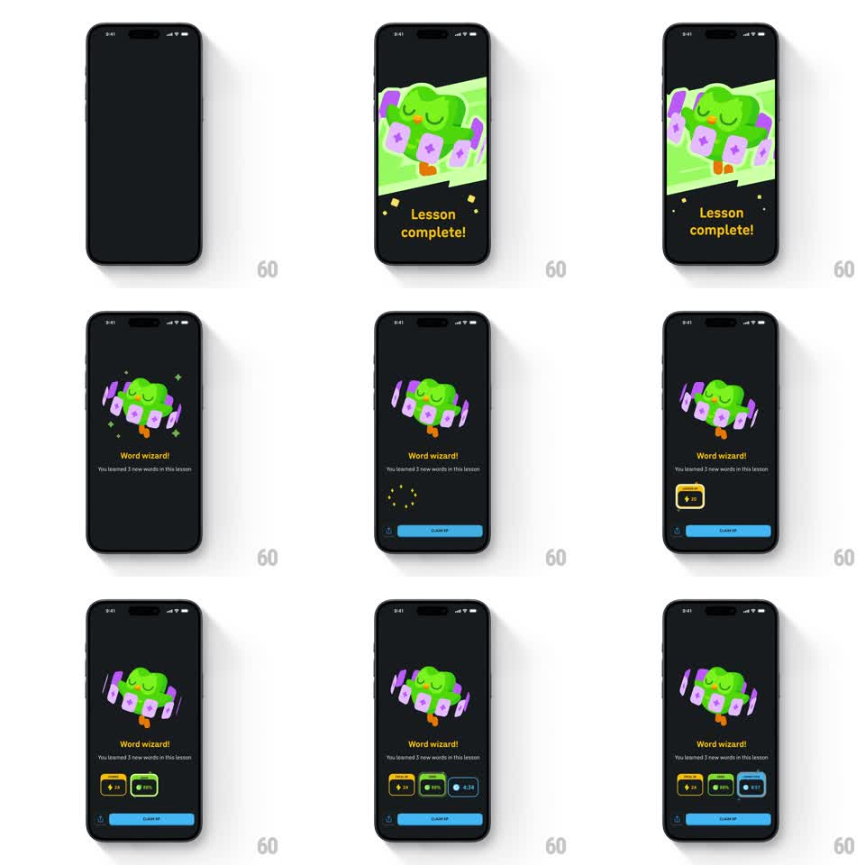

Media
Frame-by-frame

Rebuild this animation 1:1: Duolingo's "Word wizard" lesson-complete beat - the owl floats center on a dark stage while purple word cards orbit and spin around it, then stat chips (XP, streak, accuracy, time) pop in one by one above the CLAIM XP button.

Rebuild this animation 1:1: Duolingo's "Word wizard" lesson-complete beat - the owl floats center on a dark stage while purple word cards orbit and spin around it, then stat chips (XP, streak, accuracy, time) pop in one by one above the CLAIM XP button. ## Integration Integration: stack-agnostic spec - springs given as stiffness/damping, timed motions as duration + curve; map every value to your framework and animation library of choice. ## Scene Dark celebration screen: owl mascot center with a ring of purple star-cards circling it, "Word wizard!" headline, "You learned 3 new words in this lesson" subline, a row of stat chips, blue CLAIM XP button. ## Motion spec Pattern: character tableau + staggered stat cascade, ~2s. - Entrance: the owl + card ring scale in from 0.8 with a spring (320/18, 350ms); headline rises 16px + fades (250ms, ease-out). - The card ring: 4-6 purple cards orbit the owl slowly (one revolution ~8s), each card also spinning on its own axis (rotateY loop ~4s), with tiny sparkles twinkling at random points. - Stat chips: pop in left to right (scale 0.6 -> 1 with overshoot, spring ~400/16, 120ms stagger), each with a brief highlight sweep. - Button slides up last (250ms). ## Calibration - The orbit is the magic - flat cards arranged in an arc read as a layout, not a moment. - Chips land with a punchy spring; soft fades would feel corporate. ## Reduced motion Owl fades in with cards static; chips fade in together (200ms). ## Don't miss - Cards tilt as they orbit (perspective: smaller + dimmer behind the owl). - The headline uses the app's heavy display type in its accent yellow.